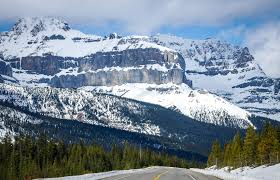

There are many places I have visited in and around United states.
when I got a chance to cross the border the first place I visited in Canada is the Banff National park. It was love at first sight.
Canadian Rocky Mountains are stretched across Banff and Jasper parks.I have not seen such huge mountain ranges till date, so I felt as if I was in aother world. All along the way betwen Banff and Jasper you see the mountains reaching the sky, beautiful lakes along the way, waterfalls, glaciers and much more.

All the lakes are so mesmerising and of all the lakes Lake Louise steals the show.You feel like you are in Paradise when you are at Lake Louise. The torquoise, glacier surrounded lake gives breath talking views. The water looks blue, green and sparkly.

The Skywalk is open air lookout at the Glaciers. The walkway is glass floored which makes the scene spectacular. It features Sunwapta valley and waterfalls.
Its a unique oppurtunity to experience the skywalk. You can capture the moment in your heart all life long.
Along with my family, we started a road trip to Canadian National Parks from Portland, Oregon. It was 10 days trip along with the journey. We started along Spokane and stayed at Booners Ferry before entering Canada at Eastport. We took a hotel in Golden and went forth to visit Banff and Jasper Parks. We took back the way through Vancouver, Canada to enter United States. We covered Vancouver too.
I throughly enjoyed each and every moment I spent visiting Canidian Parks. I would suggest anyone who wants to take a vacation to try for a road trip to Banff and Jasper Parks if they live in North West of United States.